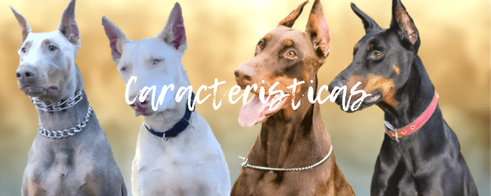
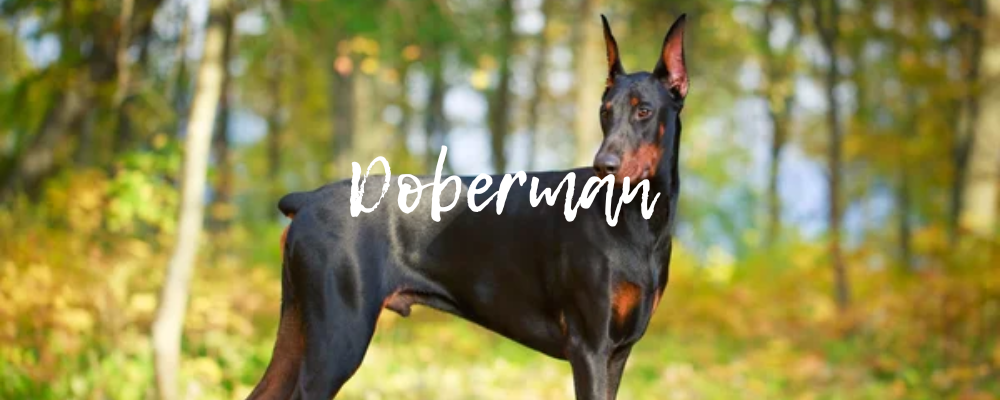

El Guardián Elegante
El dóberman es una raza que combina la elegancia física con una inteligencia afilada y una personalidad protectora. Originado en Alemania, este perro fue diseñado para ser un protector leal, y a día de hoy sigue siendo uno de los perros más confiables en roles de seguridad y como compañero familiar.

Historia De La Raza
El dóberman fue creado en 1890 por Karl Friedrich Louis Dobermann, un recaudador de impuestos alemán. Necesitaba un perro que lo protegiera mientras realizaba sus rondas, a menudo en áreas peligrosas. Para lograrlo, cruzó varias razas como:
• Pinscher Alemán: Por su tamaño compacto y valentía.
• Rottweiler: Por su fuerza y capacidad de guardia.
• Weimaraner y Manchester Terrier: Para añadir velocidad y agilidad.
• Galgo Inglés: Contribuyó a su elegante figura atlética.
El resultado fue un perro excepcionalmente valiente, protector y con una inteligencia extraordinaria, que rápidamente ganó popularidad en todo el mundo.
Características Físicas
Los dóberman tienen una apariencia atlética y elegante, que combina fuerza y agilidad.
Tamaño y peso
• Machos: Altura de 66-72 cm y peso entre 34-45 kg.
• Hembras: Altura de 61-68 cm y peso entre 27-41 kg.
Pelaje y Colores
El dóberman tiene un pelaje corto y brillante, fácil de mantener. Los colores aceptados son:
• Negro y Marrón rojizo: El más común, con marcas marrón rojizo en el pecho, cejas, hocico, patas y cola.
• Marrón y Marrón rojizo: Una variación más cálida del clásico.
• Azul y Marrón rojizo: Más raro, con un tono gris azulado.
• Isabella (Crema): Muy inusual y delicado en salud.
Cabezas y Orejas
Su cabeza es alargada, con un hocico fuerte y ojos de mirada alerta. Aunque tradicionalmente se les cortan las orejas para que queden erguidas, esta práctica está prohibida en muchos países debido a su impacto ético. Las orejas naturales son igualmente hermosas, caídas y suaves.
Cola
Por razones históricas, su cola se corta en las primeras semanas de vida para evitar que se lastime mientras trabaja, pero en muchos lugares esta práctica está prohibida. Las colas naturales son delgadas y elegantes.

Personalidad y Temperamento
Un dóberman bien socializado es un perro equilibrado, valiente y leal. Sin embargo, su temperamento puede variar dependiendo de su crianza y entrenamiento.
Características Clave:
• Lealtad Incomparable: Un dóberman siempre protegerá a su familia, siendo especialmente cariñoso con los niños.
• Valentía: No dudarán en enfrentarse a una amenaza si sienten que su familia está en peligro.
• Inteligencia: Ocupan el puesto número 5 en inteligencia entre las razas caninas. Esto los hace fáciles de entrenar, pero también necesitan estímulos para evitar el aburrimiento.
Convivencia Familiar
• Con Niños: Son protectores y cuidadosos, pero es importante enseñar a los niños cómo tratar a un perro con respeto.
• Con Otros Animales: Si se crían juntos, pueden convivir con otros perros o gatos. Sin embargo, pueden mostrar dominio si no se socializan desde pequeños.
Cuidados Básicos
Cuidar a un dóberman requiere compromiso, ya que son perros activos y sensibles.
Ejercicio
Los dóberman necesitan mucha actividad física. Algunos ejemplos incluyen:
• Correr o Trotar: Perfecto para dueños que disfrutan el deporte.
• Juegos de Agilidad: Les encanta saltar y superar obstáculos.
• Entrenamiento Mental: Juguetes interactivos y comandos avanzados mantienen su mente ocupada.
Recomendación: Dedica al menos 1-2 horas diarias a su ejercicio físico y mental.
Alimentacion
• Porciones: 2-3 comidas al día, dependiendo de su edad y nivel de actividad.
• Ingredientes clave: Proteínas de alta calidad (pollo, cordero, pescado), carbohidratos moderados (arroz, batata) y grasas saludables.
Evita alimentos tóxicos como chocolate, cebolla y uvas.
Higiene
• Pelaje: Cepíllalos una vez a la semana con un guante de goma para eliminar pelo suelto.
• Uñas: Córtalas mensualmente para evitar que se rompan.
• Dientes: Cepilla sus dientes 2-3 veces por semana.
• Orejas y ojos: Límpialos regularmente con una gasa húmeda.

Salud y Problemas Comunes
Aunque son perros robustos, los dóberman tienen predisposición a ciertas enfermedades:
• Cardiomiopatía Dilatada: Afecta el corazón, causando fatiga y desmayos.
• Síndrome de Wobbler: Un problema neurológico que afecta la coordinación.
• Displasia de Cadera: Provoca dolor y dificultad para moverse.
• Enfermedad de von Willebrand: Un trastorno de coagulación que puede causar hemorragias.
Cuidados Preventivos
• Realiza chequeos veterinarios regulares.
• Mantén su calendario de vacunación al día.
• Haz pruebas genéticas antes de adquirir un cachorro.
Entrenamiento y Educación
Los dóberman son perros muy inteligentes y aprenden rápido, pero necesitan un líder firme y consistente.
• Métodos Positivos: Usa premios como golosinas o elogios.
• Socialización Temprana: Expón a tu cachorro a diferentes entornos, personas y animales.
• Entrenamiento Avanzado: Actividades como obediencia y rastreo son ideales para mantener su mente activa.
Curiosidades sobre los Dóberman
• Fueron apodados "Perros del Diablo" durante la Segunda Guerra Mundial por su valentía.
• Aparecen frecuentemente en películas como guardianes por su aspecto intimidante.
• Son una de las pocas razas creadas específicamente para protección personal.
